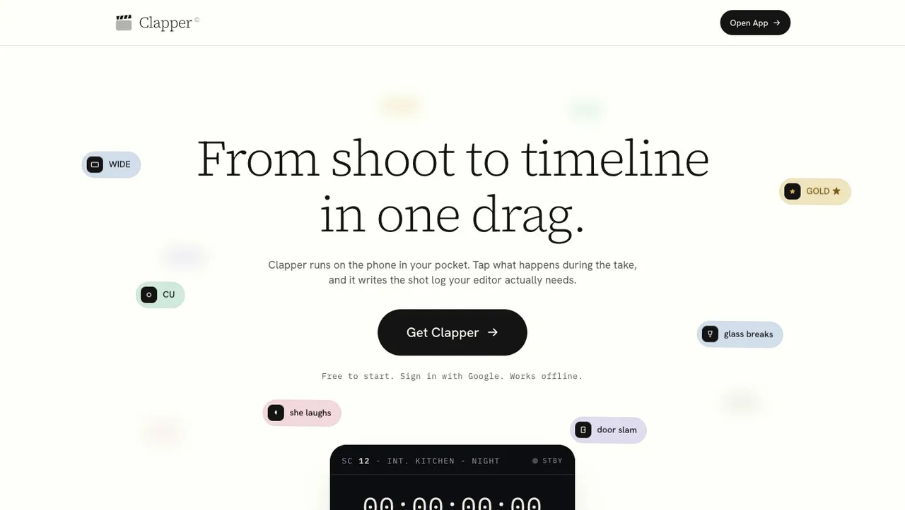
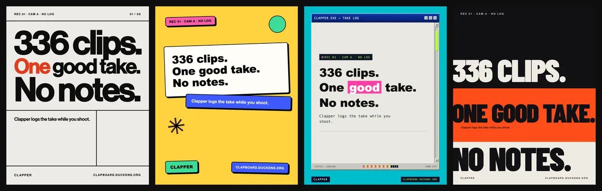
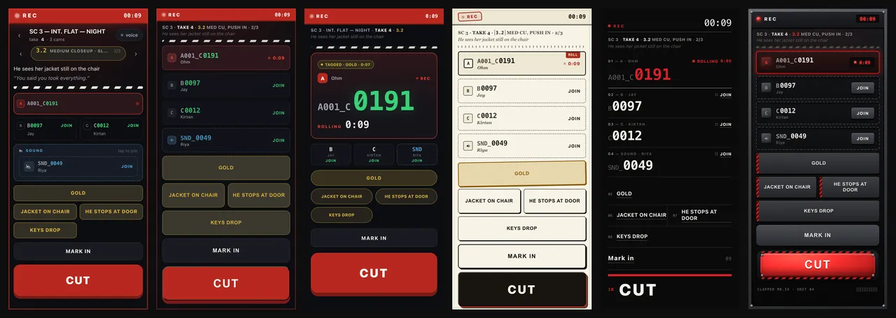
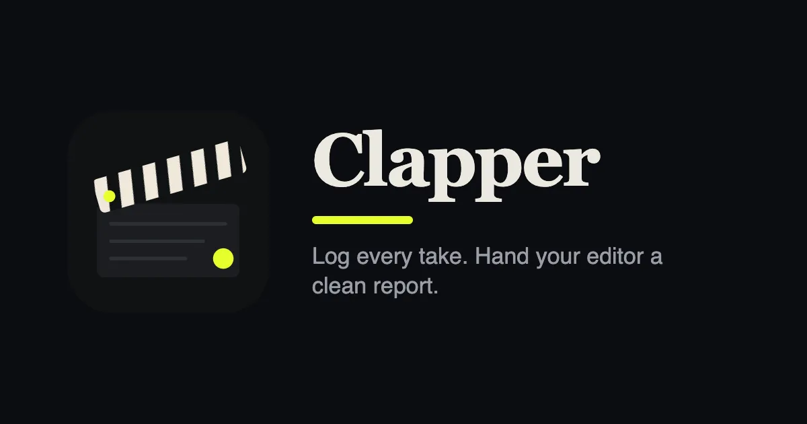

Clapper
A shot logger for the phone in your pocket on set. Ten people use it for real. Two have exported. Working on the other eight.

About Clapper
Clapper is the log, on the phone already in your pocket. Hit ROLL when the camera rolls, tap what happens (close-up, a flub, the keeper), hit CUT. It numbers every clip exactly the way the camera does, so at wrap the editor gets a timeline where C0248 in the log is C0248 on the card.
It runs offline, and needs no account to log.
Facts
- Kind
- On-set app
- Status
- Live
- Role
- Designed and built it, from the ROLL button to the Premiere XML.
- Shots read off one PDF
- 137/137
- Bars of signal needed
- 0
Screens
Behind the scenes
The product worked and almost nobody reached the good part. 131 devices rolled a take and only 2 real users ever handed an editor a report, because the export was hidden and the New roll button didn't roll. I should have watched the funnel before I built pricing.
The numbers
- real users (5+ takes logged on 2+ days)
- 10
- devices that rolled at least one take
- 131
- devices that opened it
- 1,525
- people who exported a report
- 11
- real users who ever exported
- 2
- tests passing
- 682
- commits on the working branch (428 across all branches)
- 408
- shots read from a real shotlist PDF, on the phone
- 137 of 137
How it was built
- What it does
- Hit ROLL when the camera rolls, CUT when it stops. Clapper numbers the clip files itself and hands the editor a PDF, CSV or Premiere and Resolve timelines
- Works
- Offline on set, up to four cameras (A to D), each with its own file numbering
- Started
- 11 Jul 2026, first version live on GitHub Pages the same day
- Launched
- Product Hunt, 21 Jul 2026
- Price
- First projects free, then Rs 699 a project
Built with
Timeline
- Spec, scaffold and first live build in one day
- Google sign-in and server-side quotas live
- Landing page, free template pages, 16 film-school emails
- Product Hunt launch
- Multi-cam, Resolve export, clip renumbering that shifts instead of resequencing
- Shot layer; scripts dropped, shotlists parsed on the device
- Five poster themes explored for the brand
- Payments live in real money
- First real look at the analytics: 10 real users, 2 exporters
- 20 ad agencies emailed; plan says fix activation before marketing
How it changed



More software
- SparksLighting planner for DOPs
- Retain+Retainer tracker
- CravAcheGame
- Vibe Raas LEDLED visuals
- Vibe Raas TicketsTicket system
- Page 22Game
- Fitkit ProPersonal health app
- Fourside StudiosBilling software
- Spectra MuseumMuseum website
- sortedMac app
- Deepdive MarketingMarketing autopilot
- The SportifiedIG autopilot
- Shivasva LifespaceReal-estate website
- Shelter Property Expo 2026Event website
I also make films. See the media work, or go back to Kirtan Purohit's home page.